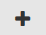

Testing a JWT protected API
JSON Web Token (JWT) is an open standard that defines a compact and self-contained way for securely transmitting information between parties as a JSON object. This information can be verified and trusted because it is digitally signed.
When a JWT protected API is published from API Gateway to API Portal you require a JWT access token to test the API.

To test a JWT protected API
1. Switch to the API Gallery page.
Alternatively, go to the Home page and type the beginning of the API name in the search box.
2. Click View details for an API.
The API Details page opens.
3. Click Get access token if you are accessing the API for the first time, else proceed to step 6.
4. In the Request API access token dialog box, provide the Application name and Application description.
The application is created and listed in the Applications page.
5. Click Request token.
6. In the API details page, click Try API.
The application is listed in the Try API page.
7. Type a path parameter key and its value in the respective fields in the Parameter tab. You can add multiple entries by clicking .
8. Type the API Gateway Administrator credentials in the User name and Password fields in the Authorization tab.
9. Click Get token.
10. Click OK.
A token is generated and is listed under the available token list. An Authorization header is added along with the access token value.
11. Select the access token and click Send.
The response is displayed.
To clear the values entered and response rendered, click Clear.